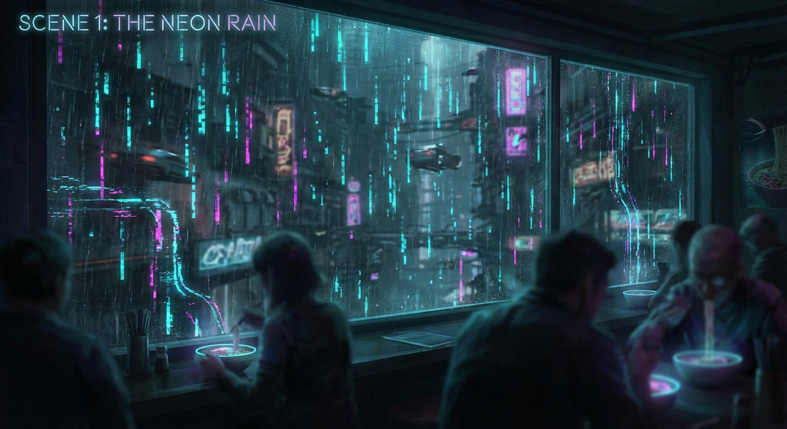
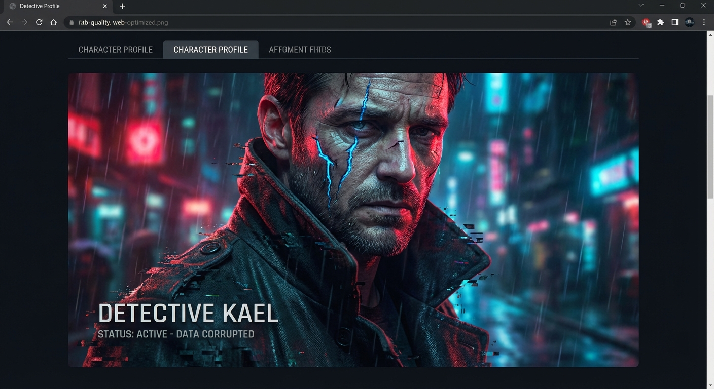

The Narrative Generation Task is an advanced AI orchestration engine designed to architect, draft, and refine complete stories with structural integrity and stylistic consistency.
Define acts and scenes precisely. The engine maintains narrative arcs across thousands of words, ensuring the story follows a logical progression from setup to resolution.
Configure tone, point of view, and writing style. Whether you need a "dramatic thriller" or a "reflective literary" piece, the AI adapts its voice accordingly.
Iterative generation means every scene is written with full knowledge of previous events, character states, and key moments, preventing continuity errors.
Generates a visual suite: Cover art, character portraits, setting references, and cinematic scene illustrations, all stylistically coherent.
Generates detailed character profiles with traits, motivations, and roles. Tracks emotional arcs and internal thoughts throughout the story.
Feed existing files or codebases as context. Perfect for generating documentation narratives, tutorials, or stories based on existing lore.
The engine begins by analyzing the subject and any input files. It determines the core themes, potential conflicts, and necessary narrative elements before writing a single word of prose.
A high-level architect agent creates a detailed blueprint. It generates character profiles, setting descriptions, and expands acts into specific scenes.
The system writes the story one scene at a time using context from previous events. Optional revision passes refine prose, flow, and voice before final assembly.
Purpose: Introduce Detective Kael and the anomaly in the server.
Kael receives a tip about a data leak that shouldn't exist. The atmosphere is heavy with digital static.
Kael investigates the breach point. He discovers code that looks... organic.
The anomaly manifests in Kael's private server. It speaks in riddles about "the old world."

The rain in Sector 7 didn't fall; it rendered. Kael watched the pixelated droplets slide down the window of the noodle bar, leaving trails of temporary corruption in the glass texture. He adjusted his ocular implant, filtering out the aggressive neon advertisements for memory upgrades.
"You look like your cache is full, detective," the bartender muttered, sliding a bowl of synthetic ramen across the counter.
Kael didn't answer. He was watching the door. The informant, a low-level code runner named Glitch, was late. In the digital afterlife, time was a variable, not a constant, but lateness usually meant deletion.
If he doesn't show in three cycles, Kael thought, the internal monologue scrolling across his peripheral vision, I'm pulling the plug on this whole operation.
Role: Protagonist
Archetype: The Cynical Investigator
A former sysadmin uploaded to the cloud before the Great Crash. His avatar wears a trench coat that constantly shifts textures. He has a visible scar of corrupted data running down his left cheek.
